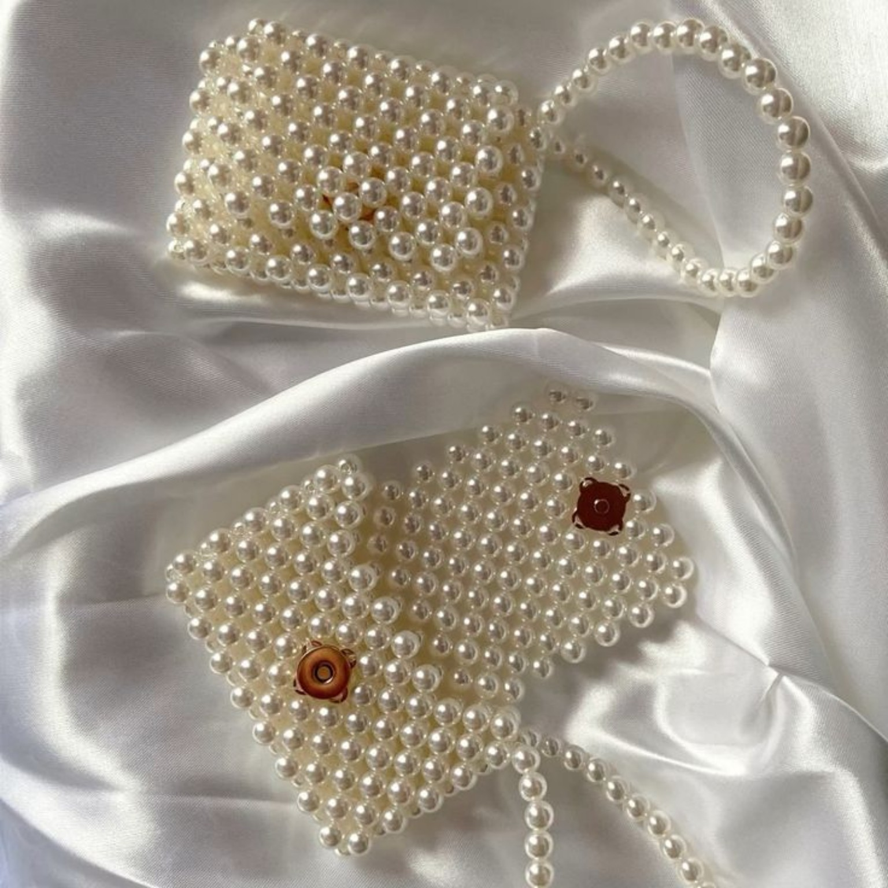

HANDMADE IN PAKISTAN
Made bead by bead.
Made to be remembered.
Elegant handmade beaded bags, pearl handbags, bracelets, accessories and custom gift pieces crafted for the moments that deserve a little extra sparkle.

THE RUMI SIGNATURE
Quiet luxury, crafted by hand.
Every Beads by Rumi piece is assembled by hand with care, attention to detail and a focus on elegant finishes. Our handmade collection includes pearl beaded handbags, shoulder bags, bracelets and thoughtful accessories. Made-to-order craftsmanship lets us keep quality at the center.
SHOP THE EDIT
Featured handmade pieces
GROW WITH US
Be a Partner of Beads by Rumi
For larger orders, events and repeat production, we can work with trusted craftspeople who can meet our quality and lead-time standards. We are building a network carefully, one reliable partner at a time.
- Bulk and event-order support
- Quality-focused production
- Clear lead times and communication
